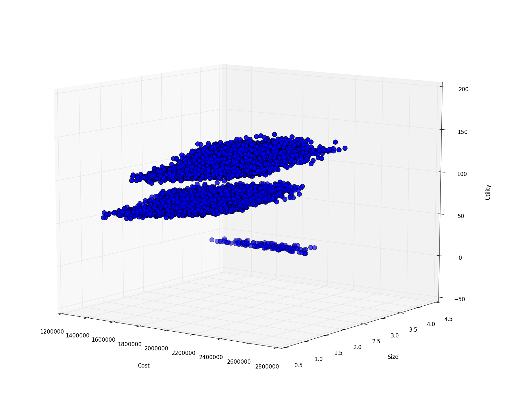
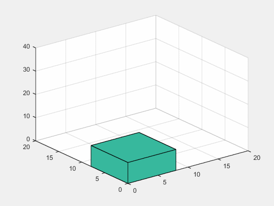
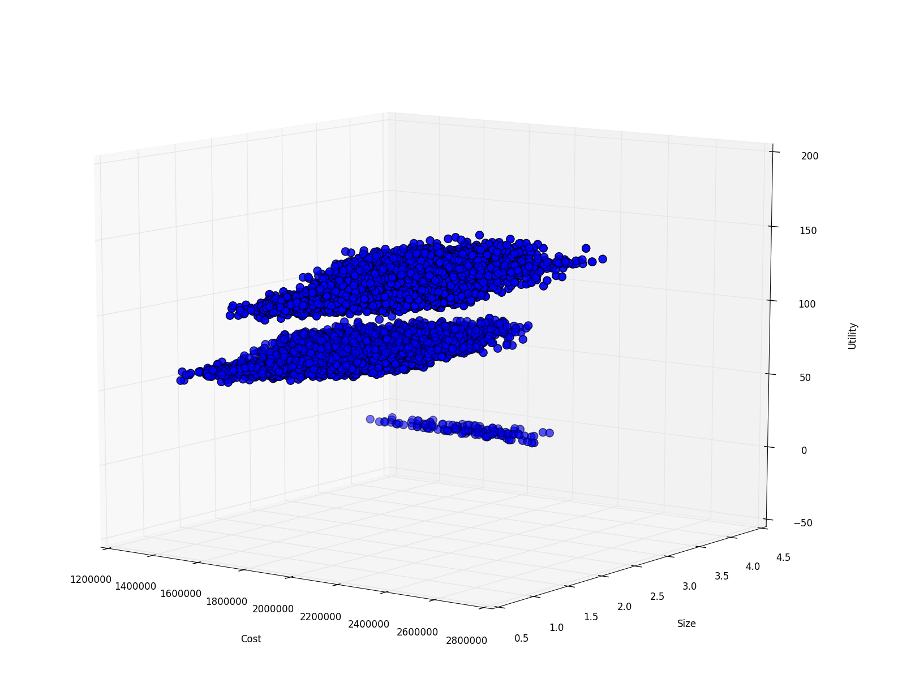
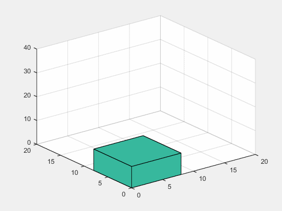

Neural Networks
Development of a neural network architecture to increase the decision making capabilities during an asteroid mission. The implemented network allows to select only the most promising images, discarding the least interesting ones (therefore optimizing the data downlink) and allows to recognize random and not predictable events (such as plumes) by detecting them.The algorithm has been implemented in Matlab / Simulink.Repository: bitbucket.
Failure Detection
Failure detection for most common actuators for small satellites: magnetic torquers and reaction wheels. Images show magnetic torquers modeling, and fuzzy logics implementation of the detection algorithm. The algorithm has been tested in a Matlab / Simulink simulation.Repository: bitbucket.
Tradespace Exploration
 



Tradespace Exploration and mission concept design exploiting genetic algorithms. Development of a design tool that emulates Concurrent Design Sessions, exploiting the power of artificial intelligence to quickly explore all the possible solutions. Among the elements of this suite there are a component database integrated with excel, a satellite configuration algorithm that proposes the most efficient way to stack the various components, and as output all the design budgets are produced (including solar panels configurations).Repository: bitbucket.